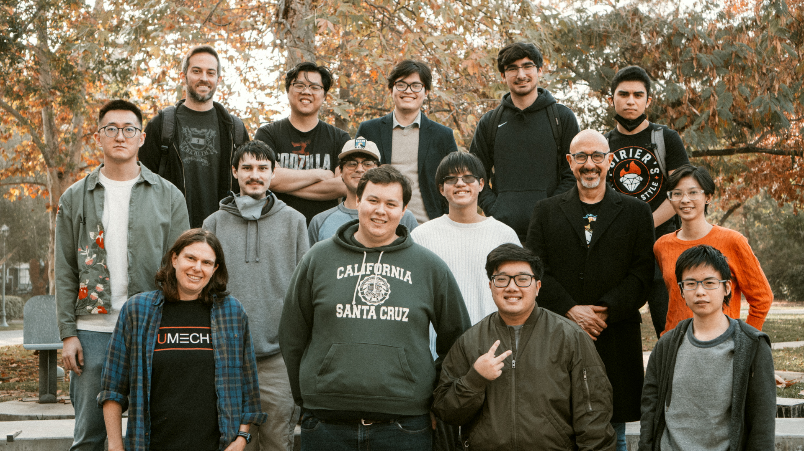
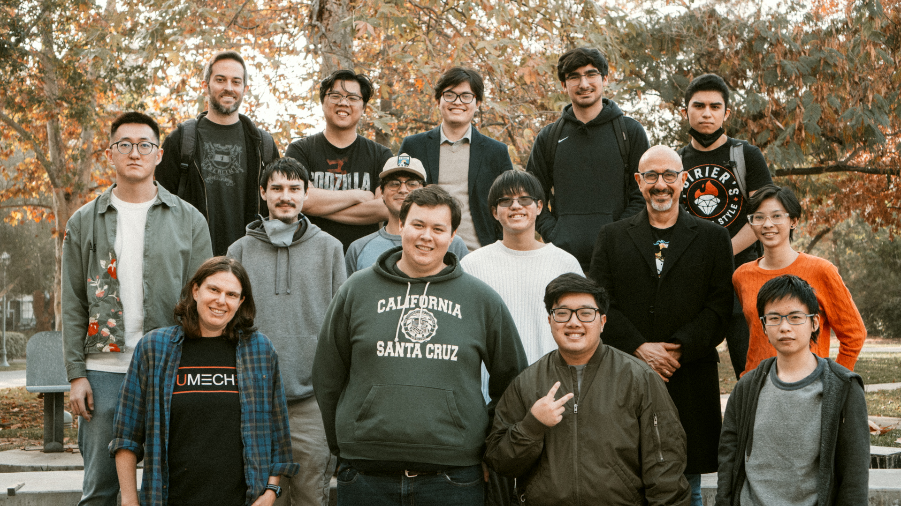
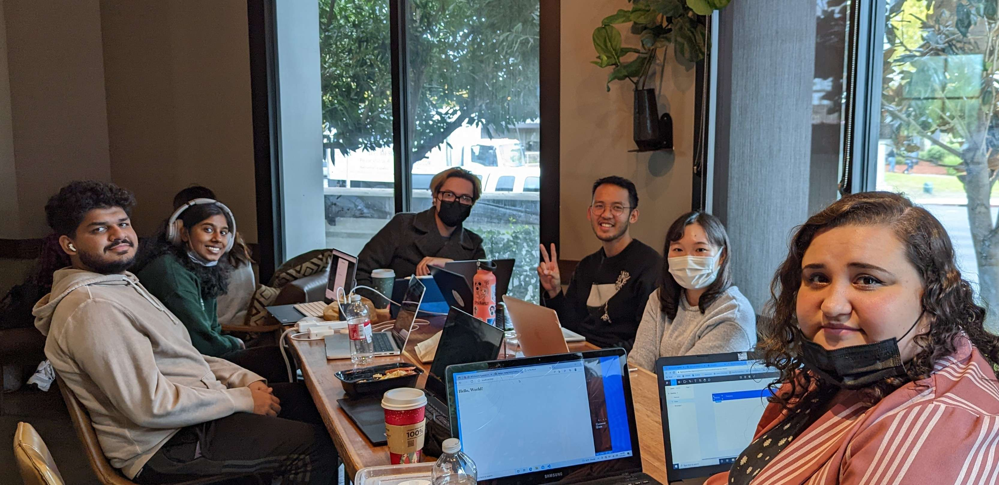
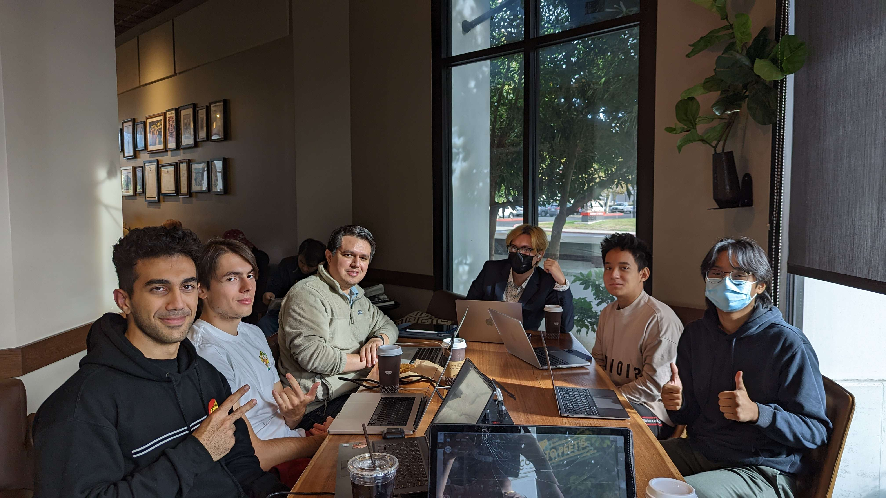
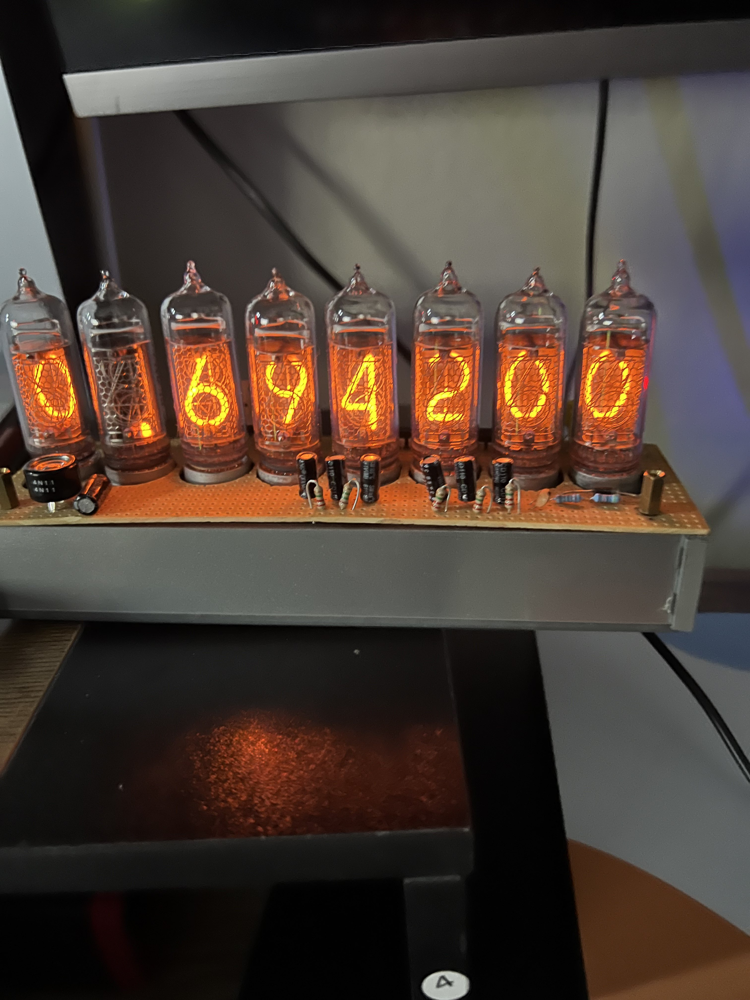

Datastructures and Algorithms Class 2021
Pizza party to celebrate passing and finishing one of the hardest courses I've taken thus far. Sassan Barkeshli, best professor I've ever had!

Pizza party to celebrate passing and finishing one of the hardest courses I've taken thus far. Sassan Barkeshli, best professor I've ever had!

DVC Hackathons 2022, Peets Coffee meeting place from opening till closing. Fun times.
 Built using IN-14 Nixie Tubes! Functions as a clock and DV meter. Thanks to Keith Moore for help and to brotoro for the guide!
